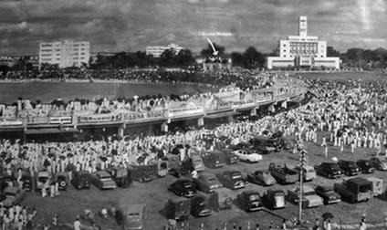
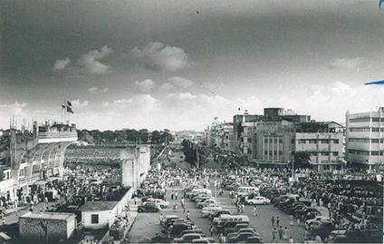

East Pakistan Era (1947 - 1971)

1950 - The First Test in Bangladesh
After the partition of Bengal in 1947, matches of domestic cricket in Pakistan were conducted in four leagues. Regional East Bengali of Pakistan teams regularly took part in the first-class Quaid-e-Azam trophy from 1954 through 1968.1955–1969: Seven international Test matches with Pakistan participating as the host team were played in Dhaka between 1955 and 1969.The first test was held between Pakistan and the Republic of India in January 1955. The match started on the first day of the year. The newly built Dacca Stadium (now “Dhaka”-Bangabandhu National Stadium) then had the maximum capacity of accommodating 15,000 spectators.

1960 - Dacca Stadium becomes a regular venue
The next match at the Bangabandhu National Stadium was played between Pakistan and New Zealand from 7 to 12 November the same year. The third Test was played at the Bangabandhu National Stadium between Pakistan and West Indies in March 1959. Then came Australia in the November of the same year under the leadership of Richie Benaud. The fifth Test at the Bangabandhu National Stadium was played in January 1962 between Pakistan and England. The next match was also played between Pakistan and England after seven years in February 1969. The last, but not the least, Test between Pakistan and New Zealand was played in November of the same year.
Bangladesh Era (1971 - )
1972 - The Establishment
The Bangladesh Cricket Control Board is established. Soon after, a cricket league commences in Dhaka and Chittagong. It is a slow start, other things having priority in the war-torn country. Early in 1975 the Dhaka (then “Dacca”) stadium was still in disrepair, the square having sunk several inches and the Press Club shell-torn.
1974 - The First Step in Domestic Cricket
A national level cricket tournament begins in the country. 1st division and 2nd division cricket leagues start at the districts level. Other tournaments that were organized included National Youth Cricket, Inter-university Cricket, College & School Cricket, Shahid Smriti Cricket, Damal Summer Cricket and Star Summer Cricket.
1976 - MCC tours Bangladesh
Robin Marlar writes Whither Bangladesh?, a detailed description of Bangladesh cricket’s state of affairs and a yearning to see Bangladesh in the international stage. Bangladesh Cricket Board officials become more alert and enthusiastic after this international exposure.After the completion of the 1975–76 domestic season, Bangladesh Cricket Control Board’s acting secretary Reza-e-Karim writes to the International Cricket Council (then called the International Cricket Conference), requesting ICC membership status for Bangladesh.Reza-e-Karim drafts the first constitution of the BCCB and in May 1976 invites the MCC to Bangladesh. In June 1976, the membership of Bangladesh is discussed in an ICC meeting. The meeting decides to finalize Bangladesh’s membership status after the MCC tours Bangladesh.The MCC arrives at Dhaka for their first Bangladesh tour on 27 December 1976 and helps build the enthusiasm; over 40,000 people attends the representative match at Dacca.
1977 - ICC associate membership
On 26 July, 1977, Bangladesh becomes an Associate member of the I.C.C.The BCCB seeks coaching help from the MCC. The MCC sends Bangladesh her first foreign cricket coach, an Englishman named Robert Jones.
1978 - Sri lanka visits, MCC revisits
In January, Sri Lanka, yet to be a test team, tours Bangladesh. In December, the MCC arrives in Bangladesh for the second time in a tour that lasts until 14 January 1979.
1979 - Bangladesh plays ICC trophy
Bangladesh appears in the first ICC trophy in England. Bangladeshis win matches against Fiji and Malaysia.
1980 - Pakistan tours, MCC keeps coming
In January, Pakistan tours Bangladesh for a 2-day match in Chittagong and a 3-day sellout match in Dacca.The MCC tours Bangladesh for the third time.
1982 - Bangladesh finishes 4th in ICC trophy
An Indian first-class team, the Hyderabad Blues, boasting five Indian test players, visits Bangladesh in January.In May–July 1982, Bangladesh takes part in its second ICC trophy competition and finishes fourth among sixteen national teams.


All Right Reserved © 2020